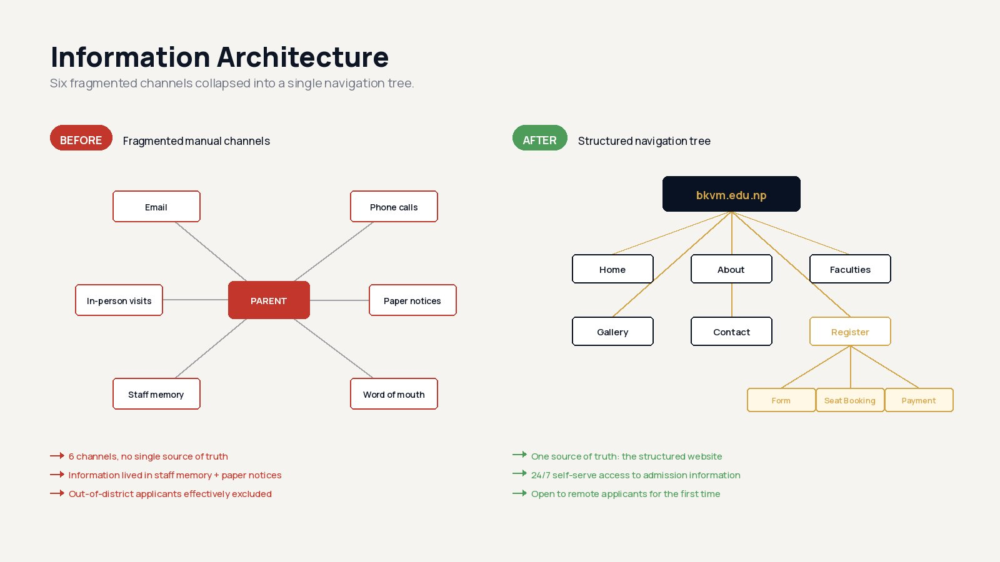
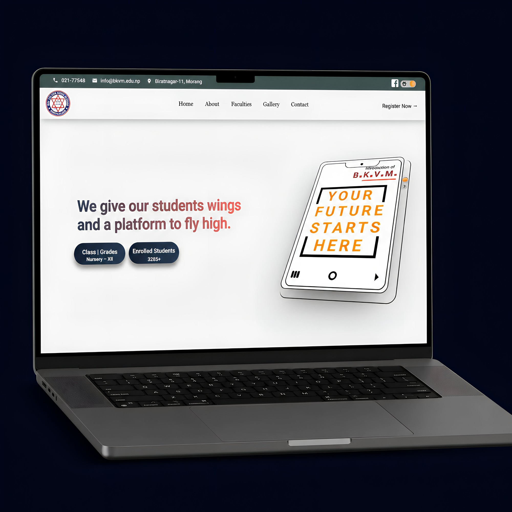
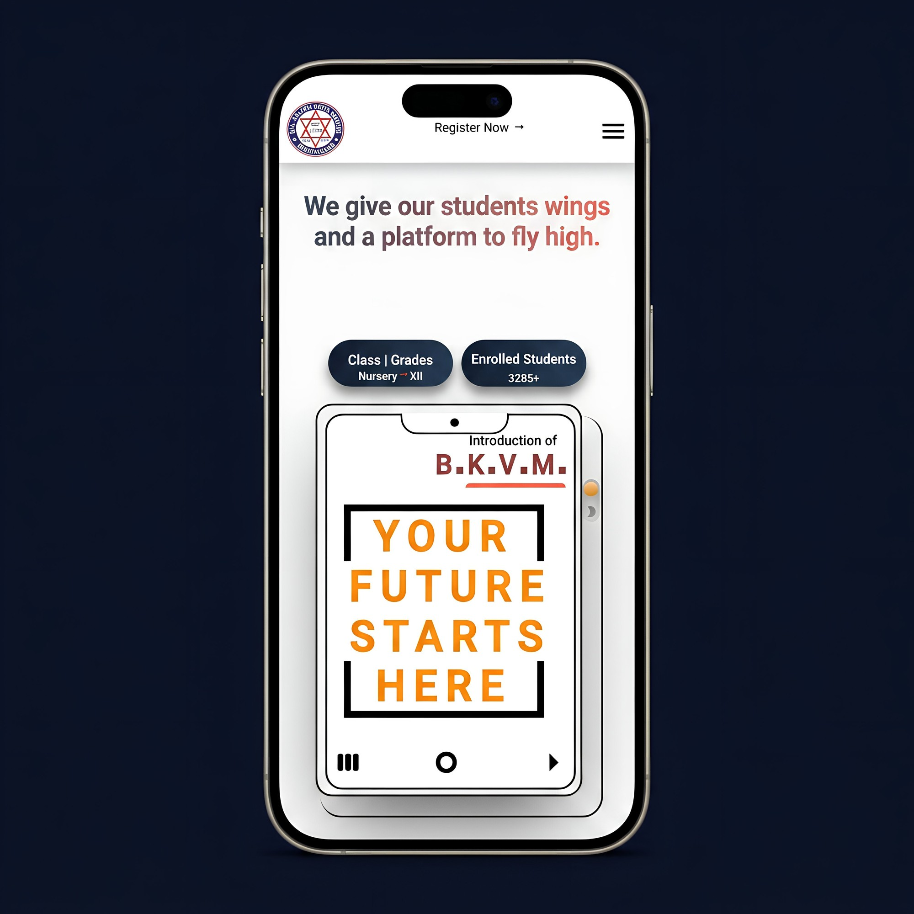
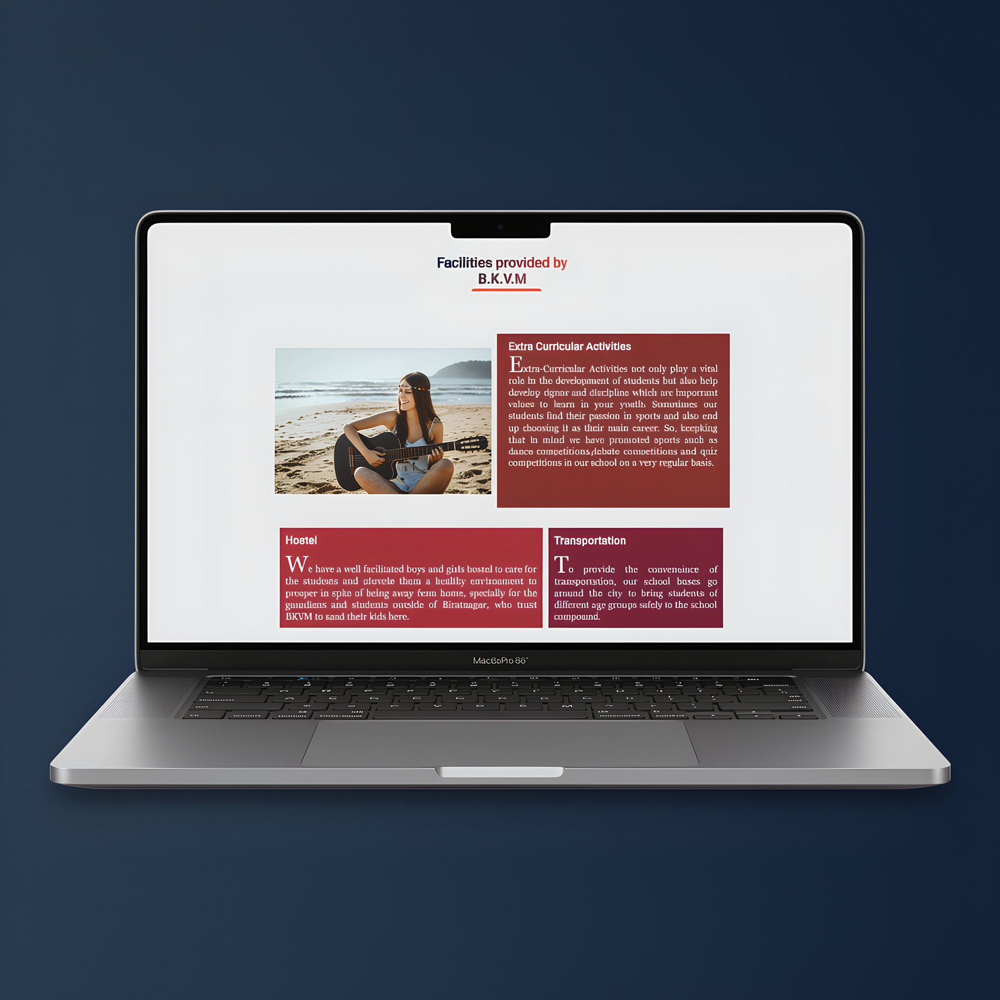
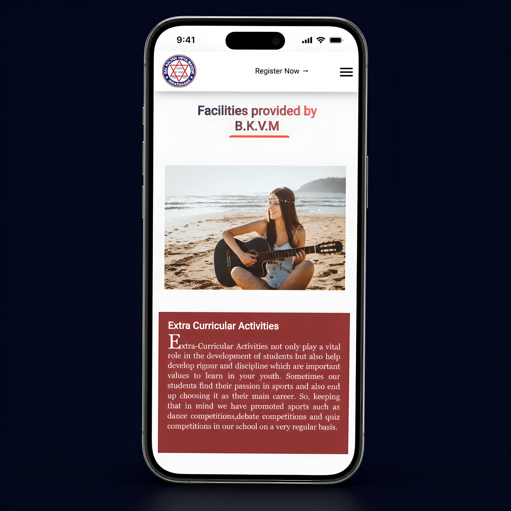
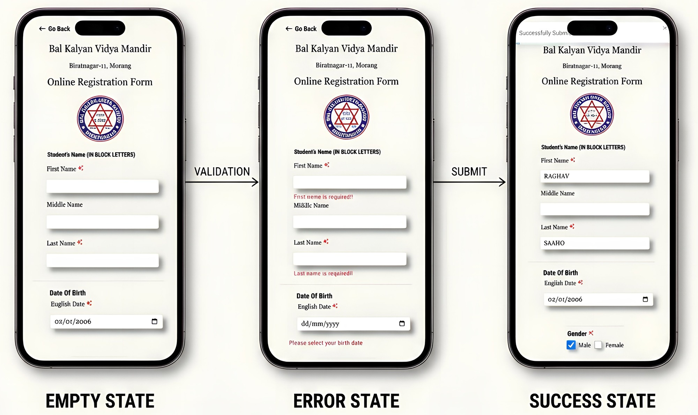
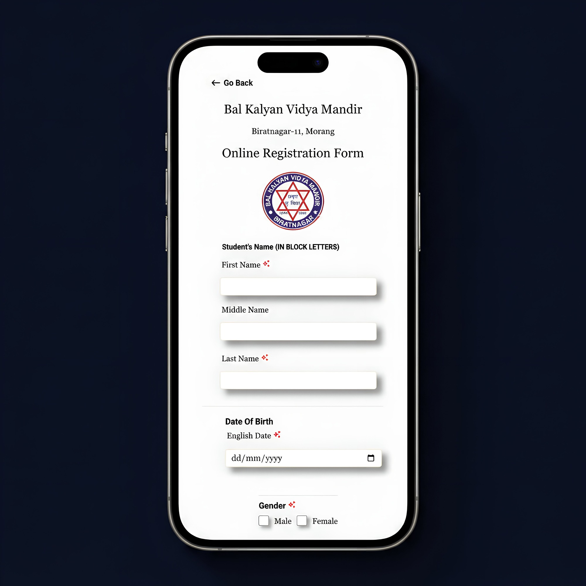

Case study · 2023–2025
Bal Kalyan
Bal Kalyan
Vidya Mandir.
First website for a 40-year-old school. Replaced phone calls and paper forms with one online registration. Live for 24 months.
A 40-year-old school in Biratnagar, Nepal. 3,285 students enrolled. The admissions problem had been the same for decades. Parents had to call, email, walk in, or read paper notices on the school gate. Information was everywhere and nowhere. The brief was simple: build one place where everything lives.
Six channels.
No single source of truth.
For 40 years, parents had 6 ways to reach BKVM: phone calls, email, in-person visits, paper notices on the school gate, staff memory, and word of mouth. None of it was indexed. None was searchable. None worked after office hours.
Parents from outside Biratnagar were basically excluded. Working parents couldn't get information after 5 PM. Most of the school's real admissions knowledge lived in the staff's heads. So the first job wasn't to design a website. It was to take 6 scattered channels and put them into one structure.

Before6 channels. No single place to find anything. Most of it lived in staff memory or on paper.
ContextOut-of-district parents were excluded. Working parents had no way to apply after office hours.
AfterOne structured site. Available 24/7. The school can now reach applicants from anywhere.
Before designing anything, I had to figure out where everything goes.
One identity. One CTA.
The new homepage does three things. Establishes the school's identity. Surfaces the action parents come for (Register Now). Shows proof points (class range, total students) above the fold. No carousel. No hero video. Just the things parents need to see first.

Most parents are on phones.
Over 80% of admissions traffic on the site comes from phones. So the mobile layout reorders the hero. The headline comes first. Stat pills come second. The school intro panel comes third. It reads top to bottom, not the way the desktop layout reflows.
Register Now sits at the top of the viewport on every page. Everything else is collapsed into the hamburger menu. One screen at a time, one thing to decide.

Information, not decoration.
The old site put hostel, transport, and extra-curricular info inside dense red boxes that all fought for attention. The brand red couldn't go (40 years of recognition, the school wasn't going to drop it). What I did was keep the red, give each card more space, and let the information breathe.

Asking parents to read, not skim.
On mobile, each facility becomes its own panel: a full-width image, then a single paragraph. The paragraph starts with a drop cap, like a magazine. The drop cap is a visual cue that says read this carefully, this is information you need, not a brochure.

Inline validation.
Plain-language errors.
This was the hardest screen in the product. It takes a 17-field paper form and makes it not feel like a 17-field paper form. The form has three states: empty, error, and success. Each state speaks differently to the user.
No "Field invalid" errors. The error names what's actually missing: "First name is required." No surprise modals when the user hits submit. Success confirms inline and moves on.

One field, one job.
Every field has one responsibility. Required-field markers are visible from the start, not revealed only when you tap into the field. The date input uses the native picker so it works on every Android version parents are likely to be using.
The form has a Go Back button instead of relying on the browser's back. So a parent on a mid-tier phone can step out of any screen without losing the data they've typed in.

Decision log
Four calls behind a system that's been live 24 months without a rebuild.
Why one CTA on the homepage, not three?
Parents come to BKVM with one job: enroll a child. Three CTAs (Apply, Learn, Tour) split that goal and add a decision the parent didn't come to make. One CTA matches what they came for. Everything else is one tap away in the menu if they want it.
Why drop caps on the facility pages?
A drop cap signals "read this slowly," like a magazine. A standard paragraph signals "skim this." Parents read facility info carefully before enrolling. Hostel rules, transport routes, fee structure - none of that should be skimmed. The drop cap quietly tells them to slow down.
Why "First name is required" instead of "Field invalid"?
Errors should name what went wrong, not just flag that something did. "Field invalid" makes the user hunt for the problem. "First name is required" tells them what to fix. I also kept required-field markers visible from first paint, not revealed only when the field gets focus.
Why keep the brand red, not modernize the palette?
The school's red has 40 years of recognition. Changing it would have severed the school from its own identity. The design problem wasn't the color. It was the density. Old site had dense red boxes everywhere. New site keeps the red, gives each block more space, lets the information breathe.
From paper forms to a site that's been live 24 months.
The site has been live for about 24 months. Within the first month, the school stopped getting admissions calls outside office hours. Out-of-district applications started coming in regularly. First time that's happened in the school's 40 year history.
3,285+
Students currently enrolled. Shown on the homepage as live proof, not a brochure number.
24/7
Self-serve admissions access. Information is no longer trapped behind office hours.
~24 mo
Months in production. No rebuild. Day-to-day maintenance is handled by the school's own team.